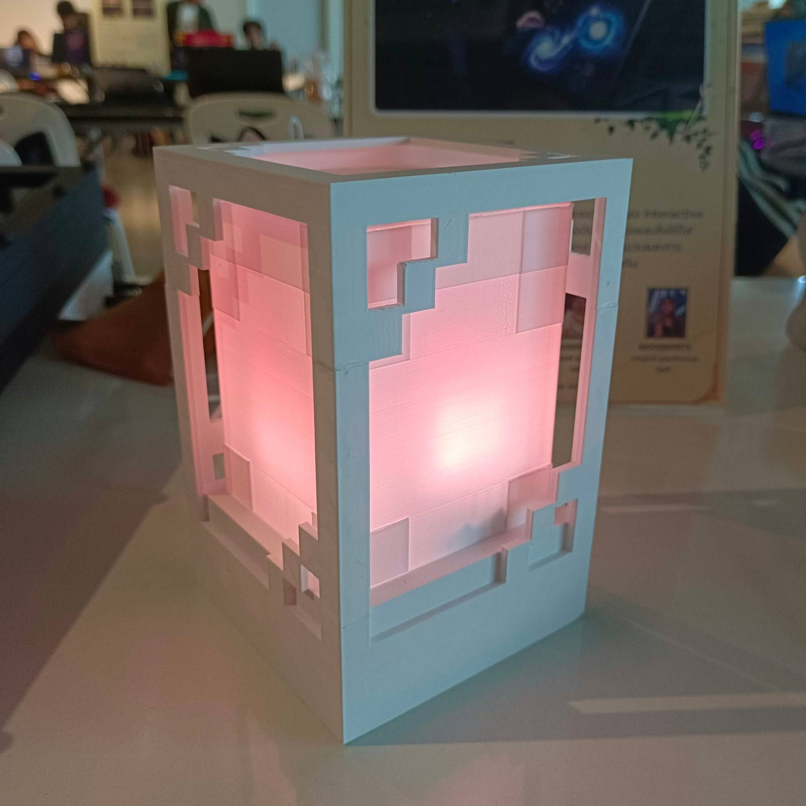
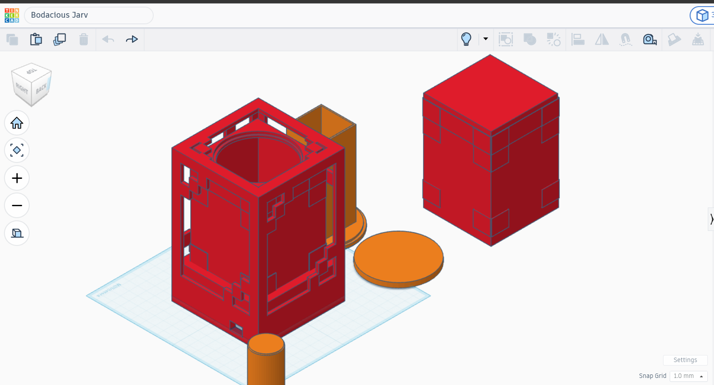
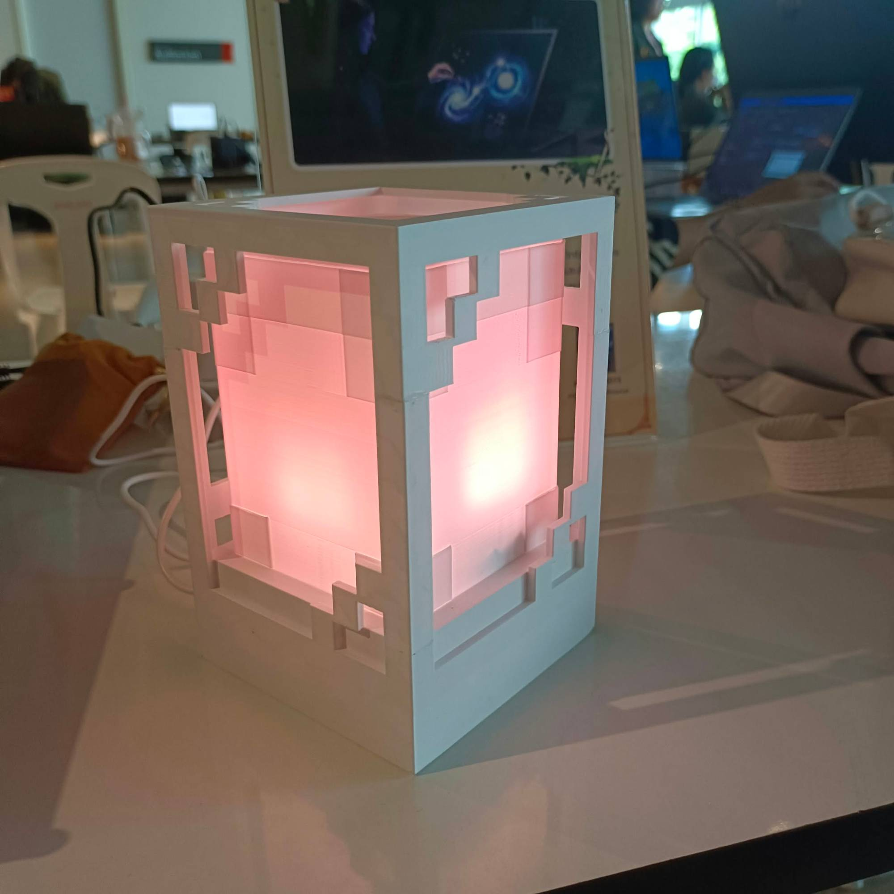

Minecraft Pixel Lamp
A 3D-printed pixel lamp whose light casts blocky, Minecraft-style shadows — controlled from a phone and powered by an ordinary phone adapter.
- Year
- Year 3, Term 2
- Team / role
- Solo · self-initiated
- Tools
- Tinkercad · 3D printing · ESP32 · WS2812B LEDs · Blynk app
- Status
- done

Problem
I wanted a lamp that looks like it came out of Minecraft, that I can control from my phone, and that doesn’t need extra hardware to run.
What I decided
- Design and print it myself. Shape modelled in Tinkercad and printed on my own printer.
- Handle power in code, not hardware. Power is handled in code instead of adding hardware, so the lamp runs from a phone charger adapter.
- A flame that behaves like a flame. I specified the flame effect to step white → orange → red, never skipping a step.
Result
A working lamp: 50 WS2812B LEDs on an ESP32. Colour, brightness and effects are set from the Blynk app, which can also pull the weather for a city.
Gallery


My role vs AI
Me: design, printing, assembly, and how the light must behave. AI: code, written to my spec.